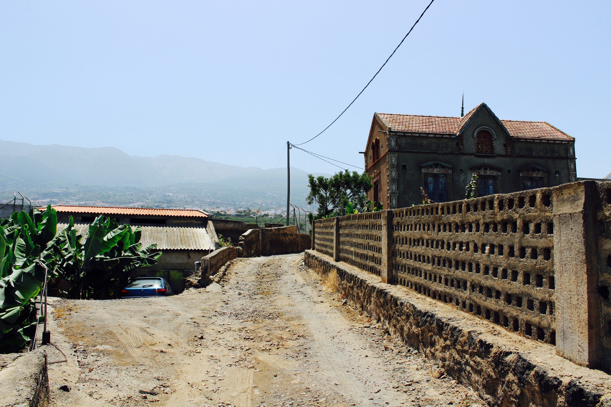

Estrategia de Turismo Comunitario en México
El turismo comunitario en México es un modelo de desarrollo turístico que busca empoderar a las comunidades locales al involucrarlas directamente a la planificación, operación y beneficio de actividades turísticas en sus territorios.
Este enfoque permite a los visitantes experimentar de manera auténtica la cultura, tradiciones, historia y entorno natural de las comunidades anfitrionas, promoviendo el respeto por los recursos naturales y el patrimonio cultural.

Lo esencial del Turismo Comunitario
Un turismo donde las actividades, productos y servicios que se ofrecen, son gestionados por las propias comunidades rurales e indígenas.

¿Por qué elegirlo?
¡Es un turismo con impacto positivo!
- Ofrece experiencias auténticas
- Apoya la economía local
- Preserva el medio ambiente
La ONU Turismo lo promueve como una herramienta para el desarrollo sostenible, la preservación de la cultura y el entorno natural.
Una forma de contribuir al desarrollo local.
Es elegir el Turismo Comunitario. Esta es solo una introducción de lo que debes saber sobre él. 🌱.

Actividades que puedes realizar de Turismo Comunitario
Todas las actividades son ofrecidas por las propias comunidades locales quienes comparten sus conocimientos, tradiciones y formas de vida fortaleciendo su identidad y cultura.
- Talleres artesanales: Alfarería, bordado, tejido, etc.
- Talleres Gastronómicos: Aprender a preparar platillos locales con ingredientes de la región
- Rutas de naturaleza y aventura guiadas por las comunidades locales como: Senderismo, montañismo y cañonismo.

Explora los estados
Haz clic en un estado en el mapa o en el listado para conocerlo más a fondo: